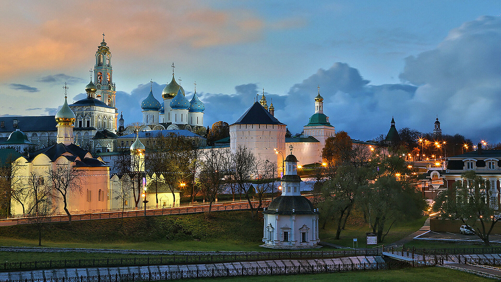

Золотое кольцо России
Информация
Золотое кольцо России — туристический маршрут, проходящий по древним городам Северо-Восточной Руси,
в которых сохранились уникальные памятники истории и культуры России, центрам народных ремёсел.
В Золотое кольцо входят восемь основных городов — Сергиев Посад, Переславль-Залесский, Ростов Великий,
Ярославль, Кострома, Иваново, Суздаль и Владимир.
Тем не менее, многие туристические агенства часто включают в маршрут до 26 точек на карте.
Термин «Золотое Кольцо» ввел в обиход русский журналист Юрий Бычков в 1967 г. Он писал очерки о культурном наследии в газете «Советская Россия». В каждом из 8 городов туристического маршрута происходили важные судьбоносные события, сформировавшие историю Руси. Знаменитые достопримечательности возникали с XII века. В XVII-XVIII веках большое влияние на искусство оказали реформы Екатерины Великой. В это время происходил культурный обмен между Россией и Европой, главным образом это коснулось архитектуры. К сожалению, не все постройки сохранились до наших времен. Справа вы можете лицезреть город Владимир в 1911 году на фотографии Сергея Михайловича Прокудина-Горского.

Сам Юрий Бычков писал: «Впав в задумчивость, бродил по Москве. Погода стояла контрастная пяти солнечным дням недавнего путешествия — небо заволокло серой пеленой. Поднял глаза ввысь, и взгляд мой встретил тающий в призрачной вышине, золотящийся сквозь завесу мороси медленно опускающейся с небес дождевой пыли купол колокольни Ивана Великого. Как током ударило: "Золотое!" Тотчас связалось это "золотое" с дорогой. Выходило — "Золотое кольцо"»

Факты
- Нулевой километр маршрута размещен в Ярославле
- В Суздале почти всё население работает в сфере туризма
- Все города Золотого кольца объединены в особый союз
- Самым древним городом Золотого Кольца является Ростов
- Крупнейший город Золотого кольца России – Ярославль
- Самый молодой город Золотого Кольца России – Иваново
- Среди туристов маршрута преобладают граждане Китая
- Суздаль – самый маленький город Золотого кольца
- Ярославль – древнейший из всех городов на Волге
Навигация по сайту
Для быстрой и удобной навигации по сайту вы можете перейти
на специально предназначенную для этого страницу: